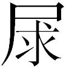

吉尔·艾利：阿兰·巴迪欧，我用一个数学术语来称呼您，您就是法国知识界的一个奇点（singularité）。
当然，那是您的政治事业，2006年，在您出版了《萨科齐是一个什么名字？》[1]（De quoi Sarkozy est-il le nom?）取得成功之后，您引起了普罗大众的关注。您是今天最后一个还在从事政治事业的知识分子，也是对自由民主制热情狂放的批评者，您也孜孜不倦地捍卫着共产主义的观念，并且您拒绝将它连同大写历史（Histoire）[2]的洗澡水一起倒掉。
不过，您所撰写的著作也极为独特，尤其从哲学的角度来看的时候。在哲学已经退却为一个专业的时代里，这种退却消磨了哲学最初的雄心壮志，然而，您坚持不懈地通过建构一个体系来恢复形而上学，我们可以将这个体系描述为关于世界、关于存在的大综合。现在，您主要在《存在与事件》（L’Être et l’événement）和《世界的逻辑》（Logiques des mondes）中所设定的哲学，在很大程度上建基在数学之上。在这个方面，您是极少数提出要严肃对待数学的当代哲学家之一，您不仅作为一名哲学家去谈论数学，而且也在日常生活基础上去践行数学。
您能首先告诉我们您同数学这种紧密的关系来自何处吗？
阿兰·巴迪欧（Alain Badiou）：可能要回溯到我出生之前！很简单，我父亲就是一位数学老师。正如拉康所说，那里有父之名的标记。实际上，这的确对我有着深远的影响，因为在我家里，就听到了数学的谈话——我父亲和我大哥的谈话，以及我父亲和他同事们的谈话，等等——这是一种非常早的印象，那时我不能理解他们谈论的是什么，但我十分敏锐，并有些懵懂地直接感受到数学十分有趣。那么我可以说，这就是第一阶段，在分娩前的阶段。
后来，作为一名中学生，当我开始进行一些相当复杂的论证时，我迷上了数学。我不得不说，真正吸引我的是那种感觉，当你做数学题的时候，这有点儿像依循着一条难以置信的蜿蜒曲折、错综复杂的路径，穿越了诸多观念和概念的丛林，不过，在某一瞬间，这条路豁然开朗。对于数学，很早我就沉迷于这种近似于美感的感觉。我读九年级和十年级的时候，可以提出一些平面几何的定理，尤其是无限多的三角形几何定理。我思考过欧拉线（la droite d’Euler）。首先老师跟我们讲解了三角形的三个高相交于点H，这非常精彩。随后三角形三条边的中垂线相交于点O，越来越精彩了！最后三角形的三条中线也相交于一个点G！太棒啦！不过，老师有点儿故弄玄虚地告诉我们，他可以像伟大的数学天才欧拉一样，证明这三个点H、O、G，处在同一条直线上，而这条直线就是“欧拉线”！三个基本点的排列，就像一个三角形的特征一样，如此出乎意料，如此精彩绝伦！老师并没有跟我们证明这一点，因为这个证明对于十年级的学生来说太难了，但是我自己对此兴趣盎然，我竭尽全力要去证明它。这意味着你必须沿着一条路走下去，尽管这条道路十分艰难，但最终会获得回报，这就是一个真正的发现，一个预料之外的解答。后来我经常拿数学与走山路做比：路很长，也很艰难，有着许多的曲折，许多峰回路转，也需要攀爬陡峭的高峰。你相信你最终会抵达山顶，在那里会有一个更大的转折……你流下了汗水，你饱经磨难，一旦你登上巅峰，那种成就是无与伦比的：那是一种惊喜，数学最终的魅力，有一种拨云见日之感，那是一种天下无双的美。这就是为什么我要从这种美的角度来继续数学的道路。我也注意到，这是一种非常古老的角度，事实上，从亚里士多德开始将数学作为一门学科之后，数学的真远远赶不上数学的美。他提出数学的伟大在于美，而不是在于本体论或形而上学方面。
于是，在学习大学数学的头两年里，我进一步地学习了当代数学。从1956到1958年，也就是我在巴黎高师的头两年。我将哲学上的重要发现［伊波利特[3]（Hyppolite）、阿尔都塞、康吉莱姆[4]（Canguilhem）在那个时期都是我的老师］与在巴黎一大的数学课程结合起来，并与巴黎高师数学系的学生进行了实质性的讨论。那时，或许在结构主义和20世纪60年代的氛围之下，许多形式学科也需要做出回应，我坚信数学与哲学有着某种紧密的辩证关系——至少是我所概括的数学和哲学，因为数学就是我所关注的焦点。结构首先是数学家们所关注的东西。著名的人类学家列维－施特劳斯在他的名著《亲属关系的基本结构》（Les Structures élémentaire de la parenté）一书——那个时期，我饱含激情地读完了这本书——的末尾，提到了数学家韦伊（Weil），认为可以用群代数理论来理解女性交换。于是在那个时期，我的哲学方法需要把握大量的概念架构。此外，由于数学的美，以及数学所带来的创造力，数学需要你成为一个自由地需要它的主体，而不是将它当作一个对立的学科。事实上，当你在解决数学问题的时候，发现一个解——也就是精神创造性的自由——并不是某种盲目的瞎转悠，而是在整体连贯性的指引和证明规则的要求下，如其所是地按照路径的方向走下去。你实现你寻求解的欲望，并不是通过反对理性的法则，而是同时归功于这些法则的禁令和帮助。于是，这就是我开始思考的东西，首先是与拉康的合作：欲望和法则并不是对立的，而是辩证统一的。最后，数学以一种独特的方式将直观和证明结合起来，而这也是哲学必须尽其所能做的事情。
我感到，在哲学和数学之间反反复复地来回运动让我产生了某种分裂……而我所有的著作仅仅是为了克服这种分裂。这是因为我的哲学上的老师，即那位真正向我启蒙哲学的人物，就是萨特。我相信我是一个萨特主义者。但坦白来说，数学和萨特，你明白的，不可能完全兼容……他甚至有一个非常庸俗的阶段。那时他还很年轻，在巴黎高师学习，他非常喜欢反复说：“科学算个

，道德都是狗屁。”可以肯定的是，他并没有坚持这个简单化的原则，但他绝没有回到科学，尤其是形式科学上。因此在我这里，这种信念滋长起来，即哲学必须为主体留下地盘，尤其是为行动的主体留下地盘。这就是一种历史的戏剧，存在着某种主体性，不过，在理性之力及其光芒中，这种主体性可以将存在的原理与数学结合起来。艾利：为什么您在今天还认为必须颂扬数学？毕竟这个学科仍是我们教育体系的核心，它甚至是我们进行选拔的主要工具。如果拿最近法国获得的菲尔兹奖[5]（la médaille Fields）来说，我们曾11次获得这个奖项，次数仅仅落后于美国，我们甚至可以说，数学在法国的地位光彩夺人。您难道还感觉数学地位受到了威胁吗？
巴迪欧：好吧，您知道，绝大多数数学家同他们的学科保持着极其精英主义的关系。他们欣然认为，他们是唯一能理解数学的人，而这就是数学的方式。毕竟，尽管他们并不全是这样，他们在根本上认为只有他们才能理解当代数学最艰涩的证明，换句话说，多数数学家都是这样。所以，我们谈论的是一个非常排外的世界，他们在很少情况下才会接触更为广泛的公众圈子，如2010年菲尔兹奖获得者塞德里克·维雅尼[6]（Cédric Villani），正如他声名显赫的前辈数学家亨利·庞加莱[7]（Henri Poincaré）一样，但他仍然属于一个例外。
那么，一方面，你们有着极富创造性的数学知识，但仅限于小知识圈子，那是一个高度精英化、知识分子的圈子；另一方面，数学又以中学、大学为基础来进行教育传播，在我看来，这种数学教育正在逐渐变得不明朗、不确定。这是因为，尤其是在法国，数学是科学专业学校（grande école scientifique）的入学考试挑选精英的方法。那些埋头苦学的学生常常会说“准备数学考试”，真的就是这样。但最后，所有这些学习的最终目的在根本上就是成为一个被挑选出来的精英。从数学与公众舆论的整体关系来说，这种情况真的伤害了数学。绝大多数人，一旦在学校里通过了一系列相对容易的考试，他们就根本不想再与数学有任何瓜葛。在法国，不得不说，这就是日常文化的一部分。在我看来，这就是一个丑闻。
数学绝对不应当仅仅被当作学校里用来选拔工程师和政府官僚的科目，而必须作为一种本身就非常有趣的东西。与纯粹艺术一样，与电影一样，它应当作为我们日常文化的一个部分，我在后文再来谈其原因何在。但是，很明显，数学并非如此——数学甚至连电影的地位都不如，这才是最令人羞耻的地方。正因为如此，公众对数学的看法一分为二，一边是对精英主义的礼貌的尊重——相信数学会在物理学或者技术上有用处，另一边是在“我没有数学天分”这种信念下所包含的无知。玩一个不太高明的语言游戏，这种区分就是极少数驼背（bossus）和绝大多数鸡胸患者之间的分别。[8]我认为这种区分是有害的，甚至是糟糕透顶的。但我们或许会明白，要扭转这种状态并不轻松。要终结数学上的精英主义，就必须找到理解形式主义和概念目标之间的中间道路。要想做到这一点，我想这就需要哲学，所以需要更长时间地讲授哲学。
艾利：您提到了数学的应用，事实上在当代世界中，这种应用是独一无二的，即便绝大多数人不能理解数学的整体应用，或者他们甚至并不一定会意识到这种应用。
巴迪欧：这肯定是一种有矛盾的情况：今天数学无处不在。已经高度拜物教化的交往方式，完全建立在二进制语言、新代数学、素数编码等基础上。然而，大量的用户对这种方式一无所知。
我认为可以在这里通过引入教育的问题来澄清这个矛盾。在思想形成过程中，知识（例如，熟练掌握数学的形式语言）各自的地位实际上是什么，以及对这种知识的表现（例如，我谈到的使用或包含这些形式论的真正的个人兴趣）是什么？认识与思考，甚至与对我们所认识的知识的喜爱，并不是一回事。它们之间的关系是什么？这就是传播问题的关键所在。还有，正如你们所知，哲学经常对这些问题感兴趣，从一开始就是这样。柏拉图和亚里士多德认为他们自己就是教育家。实际上，在绝大多数时候，他们将哲学视为一种教导、一种教育事业，当然，哲学可以产生新的知识，但哲学首先观照的是业已确立的知识，并将其综合到一个新的主体性当中。这完全就是数学的情形，柏拉图尽管面对着他那个时代里最先进的知识，但他认为哲学具有任意思想发展中的一般功能。实际上，我们相信哲学为我们展现了知识的传播相对来说具有同质性，无论何种特殊知识，均是如此。最后，因为知识传播问题首先是让你所对话的人相信，它非常有意思，他们完全可以被它所吸引；所以说这就是所有教育的一般问题。例如，你必须让你所对话的人相信，他们很有可能会对数学感兴趣。对数学感兴趣，就像对其他类型的知识一样，并不是因为它许诺会让他们地位上升，而是因为数学本身所提供的思想营养。对与你对话的任何人来说，并不需要让他们去想：某些人可以理解数学，而另一些人无法理解数学。
艾利：当代这种对数学的无知，是不是好像世界上绝大多数人都有这种想法，包括你们哲学家在内？
巴迪欧：要分情况。不幸的是，大多数哲学家只接受过极少的数学训练（此外，仅仅是接受过形式逻辑的训练），选择了盎格鲁－撒克逊式的分析哲学，甚至选择这种分析哲学的外围形式，即认识论。分析哲学关注的是陈述之间的语言学区分，一些陈述具有意义，是合理的；而另外一些陈述没有意义，尤其是自柏拉图以来的许多哲学陈述都是如此，这些陈述都是“形而上学”，最终都是空口白话。认识论试图将所有的思想和行为问题都还原为大脑机能的实验性研究。无论这些方法能得出什么样的结论，我都不能将它们视为哲学。这些学术研究，没有任何生存性的、政治性的，或审美上的兴趣，也就意味着，对于旨在澄清真实生活是什么的哲学来说毫无用处。在法国的情况则是，数学文化激励着人们献身于一个学术性的“专业”，如科学史或认识论。这就等于是说，他们放弃了那种围绕着生活的意义、真理的联系、什么是值得过的生活等问题而组织起来的哲学事业的雄心壮志。与上述两种——在我看来——陷入死胡同的趋势不同，实际上，所有学习哲学的人在实际生活中都没有数学文化，认为他们开展工作所依靠的——如果不是唯一依靠的——就是哲学史。
这样做的主要结果是，数学的真实生活和哲学的真实生活完全是彼此分离的。这是一种新情况，至少与存在了两千年的哲学相比是如此。
艾利：说真的，即便数学和哲学很早就有着非常密切的关系——我们后面再来谈这一点——它们在今天都有着不同的发展。
巴迪欧：这就是我刚刚提到的现象。但您所提及的这两个圈子都存在着所谓的社会发展或公共发展。当代数学家通常是在极度复杂的专业数学领域中工作的人，在他们自己的层次上，彼此间可以平等地交流。这是常事，但我说过，他们那个群体不会超过十来个人。数学精英主义，在创造力上是独一无二的，但也是所有精英主义中最排外的。今天，给你篇数学论文，无论你什么时候看，都无法进入到数学之中。它不像可以承袭的财富，不能传承下来；具备平均水平的知识，甚至海量的知识，都不足以进入其中。结果，数学变成了一个遥不可及的领域。外部对他们有一个严格的定位，媒体会这样报道：有着某个重要发现的某位数学家，在他的小团体的帮助下，会赢得菲尔兹奖，此外，一般人完全无法理解他们的东西。
而对于哲学，问题完全相反，因为任何人都可以被视为一位哲学家。从此之后哲学家变成“新”哲学家，人们可以轻而易举地谈他们所关心的东西，即使只是在非常基础的层次上，我可以肯定你也可以成为哲学家！在柏拉图、笛卡儿、黑格尔的时代里，甚至在19世纪末，你成为一个哲学家需要具备关于各个科学门类的较高知识涵养，要了解那个时代的政治、科学，以及审美上的发现，而在今天，你只需要有点儿看法就行了，然后在媒体上让人们认为这些看法带有普遍性，而这些看法往往是庸俗不堪的。普遍性和庸俗不堪之间的区别对于哲学家来说非常重要。
很多人认为，我们今天已经不可能拥有这样宽广的知识。情况并非如此。自然，我们不可能理解整个科学领域的层面，或者整个世界艺术生创作产的层面，或者所有政治革新的层面。但是，我们可以也必须对这些知识有充分的了解，对于它们，我们需要有深入而广泛的体验，可以在哲学上将它们正当化。然而，今天许多“哲学家”完全达不到这个最低标准，尤其是当他们谈到科学时尤为如此，而科学之中最为重要的东西就是数学。
这是相当晚近的情况，也就是20世纪70年代末到80年代初的情况。这种情况严重损害了哲学家的形象，损害了哲学家这个观念和概念，哲学家成了随便什么问题的咨询对象。我自己也必须承认，我也面对着这种堕落的诱惑。在80年代早期，我撰写《伦理学》一书的时候，我接受了许多邀请，为银行业讲伦理学。我很严肃地谈了谈这种银行伦理学——我能弄出些文献！那些人不怎么在乎我的看法或我的承诺：因为我谈伦理学，那么我就很应该为他们所认为的这个社会的核心、生活的中心，即银行，服务。
数学和哲学之间的分歧缘于这样一个事实，即由于“新哲学家”太过狭隘、太过反动的形象，哲学的地位难以置信地变得无关紧要。不得不说，且严格地从他们所谈论的东西所需要的知识积淀角度来说，媒体上的哲学明星都是白痴。在数学上，他们不过是高年级中学生的平均水平。正好，数学有一个非常重要的美德：数学容不得瞎糊弄。这个美德的一个不好的方面是让数学变得遥不可及，变成几乎无人问津的对象，因为数学的精英主义使其与别的知识体系隔绝开来。很明显，有了如此严格的筛选程序，我们不会有什么“新数学”，这一点确凿无疑。我无法想象，“新数学”会是什么样子。即便在今天，“新数学家”也是——经历了重重困难或者才华横溢——证明了之前未知定理的人，你不可能在数学上邯郸学步，或者弄虚作假，这绝对是不可能的。
我们面对着数学和哲学的分裂，而这种状况必然会让我们古代或现代的前驱们感到无比震惊，我需要指出的是，他们许多人，其中不乏哲学名家，同时也是伟大的数学家。笛卡儿是一位奠基性的数学家，他是解析几何的发明者，而解析几何是将几何和代数统一起来的方式。他说明了空间中的一条曲线——这显然是几何学的对象——可以用一个方程来表示。莱布尼茨也是一个数学天才，他是现代微积分的奠基者。我们最后接近这样的哲学家，生活在19世纪，或许是弗雷格[9]（Frege），或许是戴德金[10]（Dedekind），或许在某些方面是康托尔或庞加莱，他们是这类伟大哲学家的最后一批。在20世纪20年代到60年代，还有一个法国的哲学学派，他们精通数学，但没有被所谓的分析哲学的塞壬之歌所迷惑。这些人包括巴什拉[11]（Bachelard）、卡瓦耶斯[12]（Cavaillès）、劳特曼[13]（Lautman）、德桑蒂[14]（Desanti）。即便是在数学和哲学的鸿沟扩大的今天，在我之后二三十年里崛起了新一代哲学家，同时有极少数数学家［特里斯坦·加西亚[15]（Tristan Garcia）、甘丹·梅亚苏[16]（Quentin Meillassoux）、帕特里斯·曼尼格里耶（PartriceManiglier）等人］，他们重新发现了形而上学，这是非常朝气蓬勃的一代人。他们中一些人已经掌握了当代数学中一些非常重要的领域，并不会将数学还原为某种语言学实证主义，或者纯粹的科学史。我认为在这方面尤其突出的有夏尔·阿伦尼（Charles Alunni）、热内·居塔尔（René Guitart）、伊夫·安德烈（Yves André），以及最近的埃里·杜林（Elie During）和大卫·拉布安（David Rabouin）。显然，我不太记得新崛起的一代人中许多其他有天赋者的名字——或者说我不了解他们，我希望是这种情况。
事实上，我在形而上学方面的工作的一部分，就是在今天拥有这种手段和愿望的人们帮助下，消除所有以哲学名义所表达的东西与当代数学令人惊叹的知识工作之间的彻底分裂。
[1] 这本书是巴迪欧的“前提”系列中的一本，在英文版出版的时候，这本书的书名被改成了《萨科齐的意义》（The Meaning of Sarkozy）。——译者注
[2] 大写历史（Histoire）在巴迪欧思想体系中有一定特指，以有别于小写历史（histoire）。在这个意义上，巴迪欧站在了后现代主义的对立面，将被利奥塔等人抹除掉的宏大叙事命题，重新作为一个重要观念提出来。在2011年出版的《大写历史的重生》（Le Réviel de l’Histoire）实际上也重申了历史不再是琐细的生活细节，而是一种真正宏大的总体性节奏，在这个意义上，巴迪欧复苏了经典的马克思主义的历史命题。——译者注
[3] 让·伊波利特（1907—1968），法国哲学家，曾担任巴黎高师校长，也是将黑格尔哲学引入法国的重要思想家，他翻译了黑格尔的著作《精神现象学》，并在法国建立一种带有存在主义色彩的黑格尔主义，他与科耶夫一并成为战后法国黑格尔运动的导师。——译者注
[4] 乔治·康吉莱姆（1904—1995），法国哲学家，主要从事认识论和科学哲学研究，尤其是对生物学的哲学研究。1924年，康吉莱姆进入巴黎高师，成为萨特、雷蒙·阿隆、尼赞的同学，他的《正常与病态》（Le Normal et le pathologique）一书对日后法国哲学的走向影响极大，福柯后来专门为第二版的《正常与病态》撰写了序言。此外，他的《生命的认识》（La Connaissance de la vie）从哲学角度来思考生物学，建立了生命论的概念，也是后来德勒兹等人生命论的一个源头。——译者注
[5] 菲尔兹奖，正式名称为国际杰出数学发现奖，是一个在国际数学联盟的国际数学家大会上颁发的奖项。每4年评选2~4名有卓越贡献且年龄不超过40岁的数学家。菲尔兹奖被认为是年轻数学家的最高荣誉，和阿贝尔奖并称为数学界的诺贝尔奖。——译者注
[6] 塞德里克·维雅尼（1973—），法国数学家，2010年菲尔兹奖获得者，他的主要贡献是对偏微分方程、黎曼几何和数学物理学的研究，尤其是他对波兹曼方程（L’équation de Boltzmann）的研究让他获得了国际声誉。他因对朗道阻尼（Amortissement Landau）和波兹曼方程的研究获得了菲尔兹奖。——译者注
[7] 亨利·庞加莱（1854—1912），法国数学家、天体力学家、数学物理学家、科学哲学家，他被公认是19世纪后四分之一和20世纪初的领袖数学家，是对于数学和它的应用具有全面知识的最后一个人。庞加莱在数学方面的杰出工作对20世纪和当今的数学产生极其深远的影响，他在天体力学方面的研究是牛顿之后的一座里程碑，他因为对电子理论的研究被公认为相对论的理论先驱。——译者注
[8] Bosse-bossus在法语中常用于表示极大区别的东西，bosse是前胸凸起的鸡胸人，而bossus则是后背隆起的驼背，鸡胸与驼背之间区分如同天壤之别。巴迪欧在此使用这个说法，表达数学专业人员和其他人之间的区别极大。——译者注
[9] 弗里德里希·弗雷格（1848—1925），德国数学家、逻辑学家和哲学家，是数理逻辑和分析哲学的奠基人。他的思想对逻辑的产生和发展，对当代哲学，特别是对分析哲学和语言哲学的研究和发展，产生了极其重要的推动作用。——译者注
[10] 尤利乌斯·戴德金（1831—1916），又译狄德金，伟大的德国数学家、理论家和教育家，近代抽象数学的先驱。1888年，戴德金提出了算术公理的完整系统，其中包括完全数学归纳法原理的准确表达方式，把映象的许多概念用最普通的形式引入数学中。此外，他还研究了结构理论的基础，使之成为现代代数的中心分支之一。现今数学上的许多命题和术语，如环、场、结构、截面、函数、定理、互换原理等，都是与他的名字联系在一起的。——译者注
[11] 加斯东·巴什拉（1884—1962），法国作家、哲学家、科学家、诗人。早年曾攻读自然科学，1927年获文学博士学位，1930年起先后任第戎大学、巴黎大学教授，1955年以名誉教授身份领导科学历史学院，并当选为伦理、政治科学院院士，1961年获法兰西文学国家大奖。巴什拉力图调和理性与经验，建立一种新的唯理论。认为科学从根本上说是一种关系的学说，认识论应建立在实践过程中的唯理论基础上，哲学的任务就是要阐明我们精神的认识过程。他的哲学思想对法国的科学哲学和文艺批评理论都产生过重要影响。——译者注
[12] 让·卡瓦耶斯（1903—1944），法国哲学家和数学家，尤其是对数学哲学有独特的贡献。巴迪欧认为卡瓦耶斯对他的思想发展影响巨大。“二战”期间，卡瓦耶斯参加了法国抵抗运动，最后被捕，1944年2月17日被纳粹枪杀。卡瓦耶斯十分重视数理逻辑对哲学的影响，他也是兰波诗歌中“逻辑造反”的倡导者。——译者注
[13] 阿尔贝·劳特曼（1908—1944），法国数学哲学家，他的父亲是犹太移民。1926年劳特曼进入巴黎高师学习数学，并撰写了《数学、观念和物理学真实》一书。“二战”期间，他与卡瓦耶斯一同加入了法国抵抗运动，后被捕，1944年8月1日，于图卢兹被德国纳粹枪杀。——译者注
[14] 让－杜桑·德桑蒂（1914—2002），法国教育学家和哲学家。他出生于科西嘉岛，并跟随卡瓦耶斯学习哲学。“二战”期间，他加入了法国抵抗运动，并与萨特和马尔罗建立了联系。1943年，他加入法国共产党，1956年出版了他的第一部著作《哲学史导论》（Introduction à l’histoire de la philosophie）。此后，他一直在巴黎高师讲授哲学，他的学生包括福柯和阿尔都塞。——译者注
[15] 特里斯坦·加西亚（1981—），当代法国年青一代哲学家和作家，1981年出生于法国图卢兹，1996年成功考入巴黎高师学习哲学，不过他的导师桑德拉劳耶是分析哲学家。现在加西亚任教于里昂三大。加西亚已经在文学创作上取得了辉煌成就，2008年他的小说《人性最邪恶的部分》（La meilleure part des hommes）获得了法国花神文学大奖，他的新著《7》在2016年刚刚获得国际图书大奖。——译者注
[16] 甘丹·梅亚苏（1967—），法国当代著名哲学家，出生于巴黎，曾就读于巴黎高师，师从阿兰·巴迪欧。他与其老师一样坚持认为数学是思考本体论的方式，并提出了当代哲学的问题是如何走出自康德以来的相关主义（correlationism）的问题。他的代表作《有限之后》出版后立即在全世界引起轰动，许多当代哲学家如齐泽克、马拉布、巴迪欧等人都视梅亚苏为未来哲学的希望。他现在任教于巴黎一大哲学系，其他主要代表作还有《数与塞壬》《没有生成的时间》《科幻小说和超科幻小说》等。——译者注